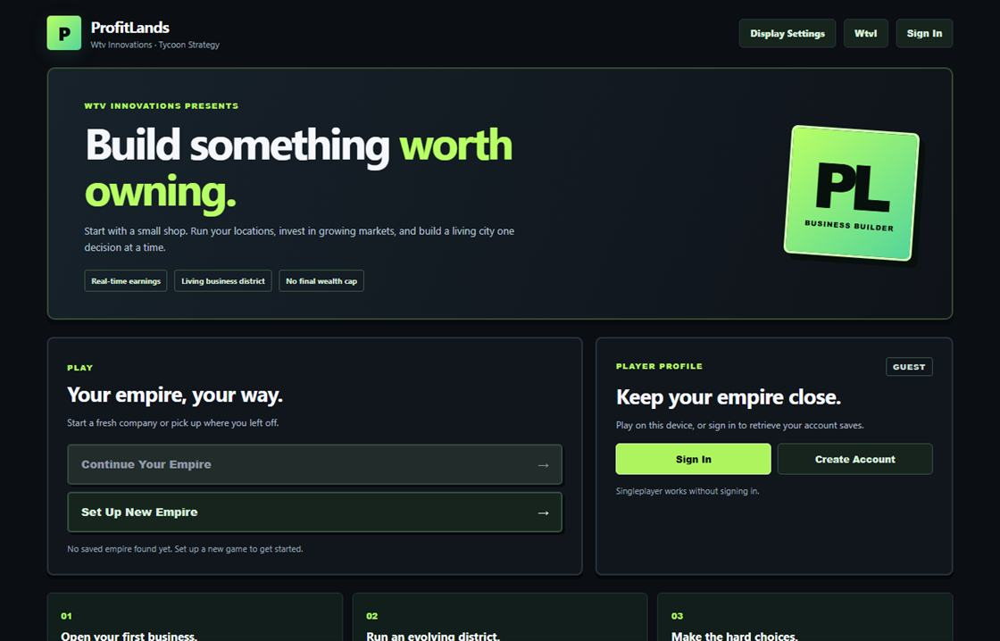
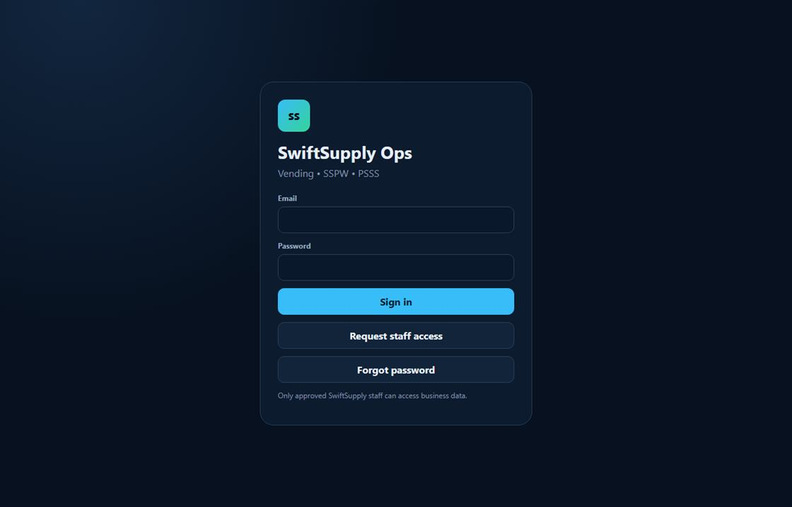
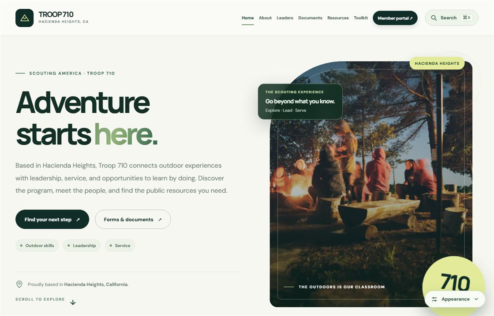
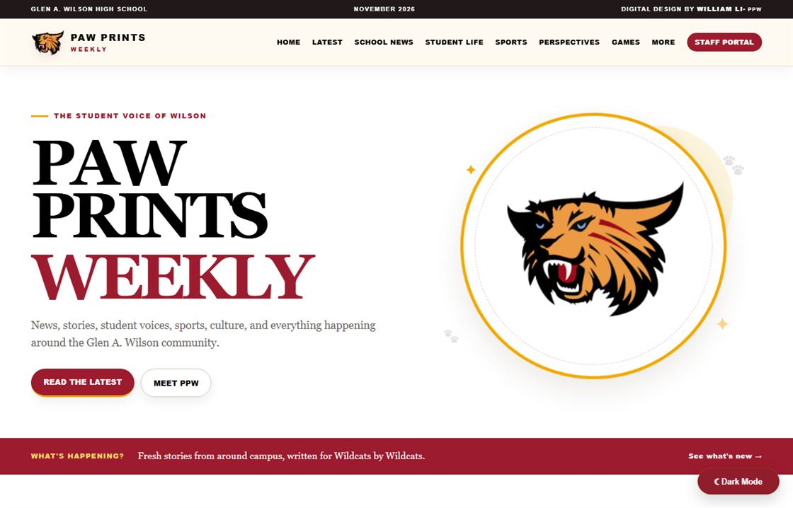
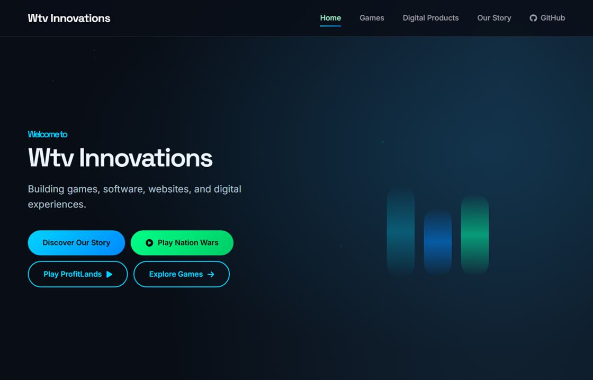
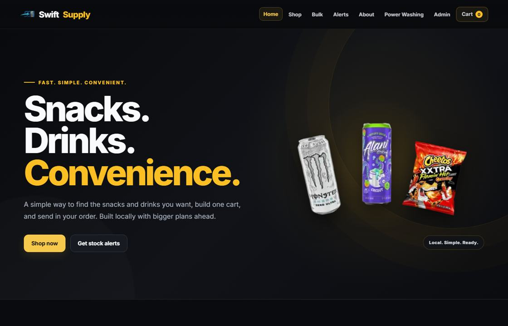
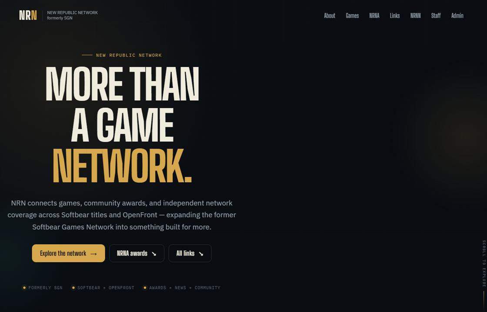
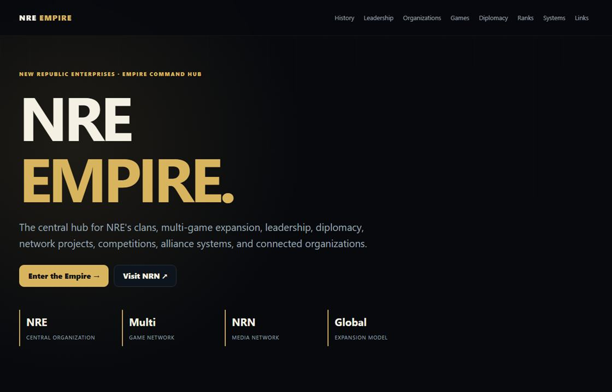
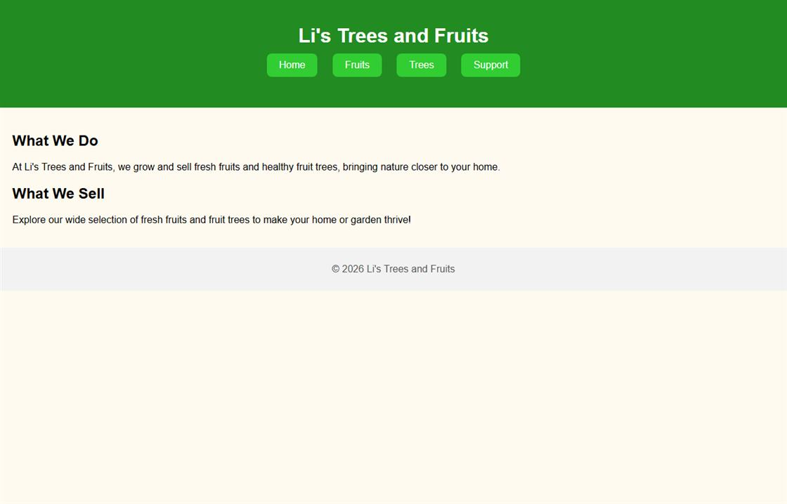

REAL WEBSITE SCREENSHOTProfitLands
A browser-based business and empire-building strategy game focused on systems, progression, and player decisions.
I’m William Li, a developer and designer creating practical digital products, interactive experiences, and websites that make complex ideas feel simple.
THOUGHTFUL DESIGN.
PRACTICAL DEVELOPMENT.
Websites, applications, and experiments — built across different needs and audiences.
Showing 10 projects

REAL WEBSITE SCREENSHOTA browser-based business and empire-building strategy game focused on systems, progression, and player decisions.

STAFF LOGIN · PUBLIC SCREENSHOTA unified, mobile-first operations platform for managing services, inventory, appointments, and business workflows.

REAL WEBSITE SCREENSHOTA responsive community website with resources, information architecture, and accessible navigation for visitors.
 REAL WEBSITE SCREENSHOT
REAL WEBSITE SCREENSHOT
An experimental strategy-game project exploring territory, resources, progression, and responsive gameplay systems.

REAL WEBSITE SCREENSHOTA publishing-focused web project bringing together storytelling, editorial structure, and clear digital presentation.
Different ideas, audiences, and use cases — all part of the process of building and learning.

LIVE SITE ↗A creative studio hub for games, software, web experiences, and projects under the Wtv Innovations name.

LIVE SITE ↗A customer-facing website built around browsing products, placing orders, and discovering local business services.

LIVE SITE ↗A community information hub combining news, games, awards, and editorial content within a shared platform.

LIVE SITE ↗An organization website with structured sections for its community, groups, programs, and related projects.

LIVE SITE ↗A straightforward business website presenting fruit and tree offerings with product and support navigation.
I’m drawn to the space where design meets engineering — where a small idea can grow into something people actually enjoy using.
I work across websites, interactive applications, business platforms, and games. I like understanding the entire picture: how something looks, how it works, and how the little details shape the experience.
Outside of development, music, photography, and community projects influence the way I approach creative work and collaboration.
A practical blend of creative thinking, product decisions, and hands-on development.
Responsive websites, thoughtful components, and polished interactions built for real use.
Clean interfaces, intuitive flows, and visual systems that keep the experience at the center.
Tools and workflows that bring structure to complex tasks and make everyday work simpler.
I build these projects to explore ideas, learn, and create things people can use. Sharing my work or supporting a repository helps me keep improving.
Monetary donations aren't enabled yet. This option will open once a verified payment link is added.
This portfolio does not collect payment information. If donations are enabled, payments are completed on an external provider's site.
Interested in a collaboration, a website, or a creative project? Start with a short brief and explore what we could build.
Start a project inquiry